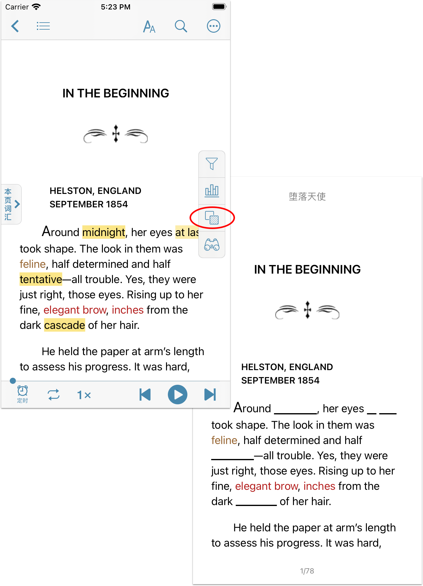
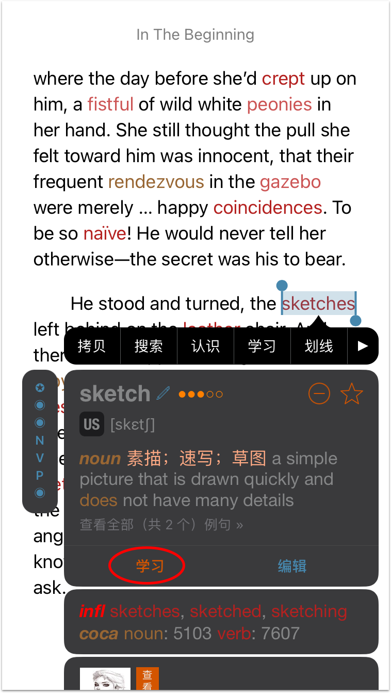
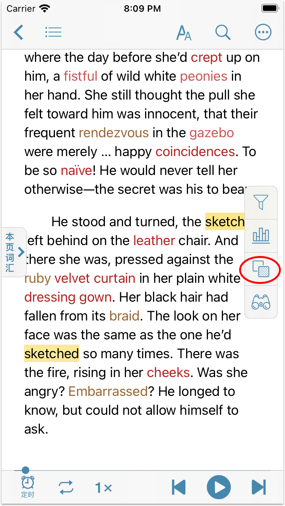
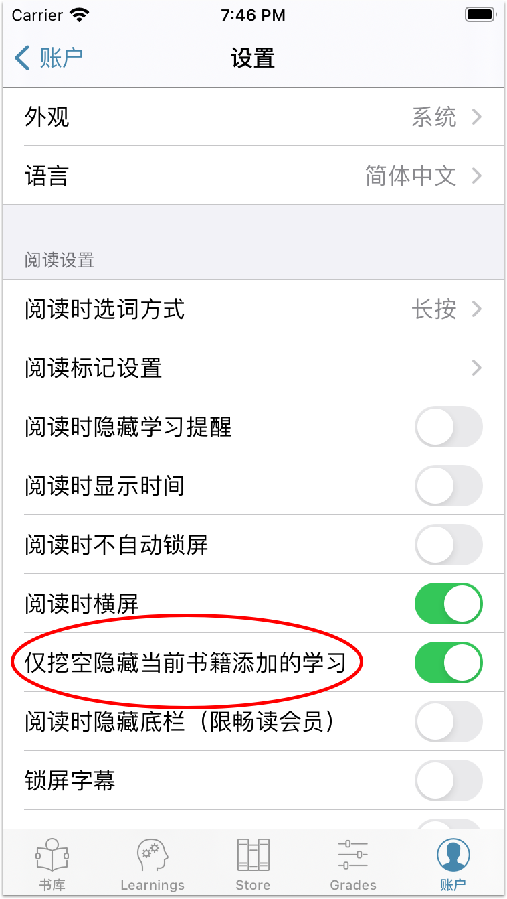

使用挖空隐藏功能可以在阅读书籍时将标记为学习的内容隐藏，并以下划线的方式显示，方便英语学习者做“挖空练习”。开启【挖空隐藏】后，被用户标记为学习的内容（包括单词、短语和句子）会自动隐藏。点击挖空的地方便可将学习恢复，方便测试和复习。
注意：【挖空隐藏】功能不支持PDF格式的书籍，并且需8.3.5及以上的听阅版本。

如何使用【挖空隐藏】功能
挖空隐藏功能只适用于纯文本书籍，比如epub、txt等。在阅读书籍时，长按生词打开单词菜单，点击“学习”将单词加入生词表，然后点击屏幕右侧的图标  即可开启挖空隐藏功能。开启后，单词将被隐藏，并被下划线代替。
即可开启挖空隐藏功能。开启后，单词将被隐藏，并被下划线代替。



如何仅挖空隐藏当前书籍添加的学习
默认情况，开启【挖空隐藏】后，书中将隐藏所有正在学习的内容。您也可选择只隐藏从当前书本中添加的学习，因为有些词在别的书籍中可能有特殊含义，在当前书籍中却只是一个普通的词，比如of、in以及一些常见的多义词。若需开启，请到设置中打开开关“仅挖空隐藏当前书籍添加的学习”。
